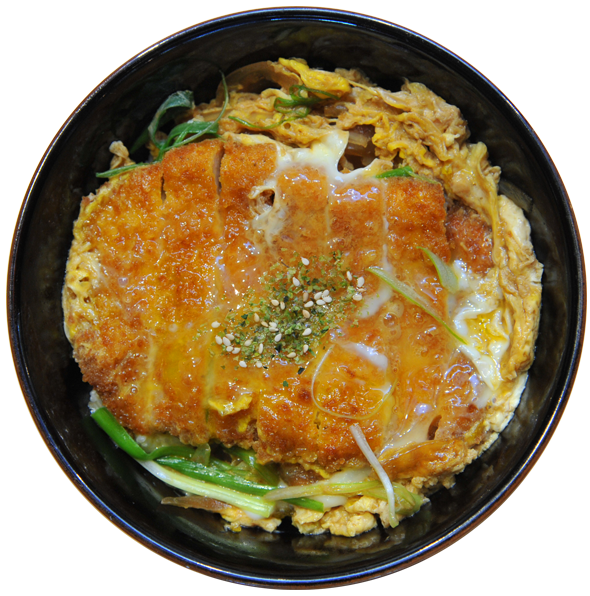
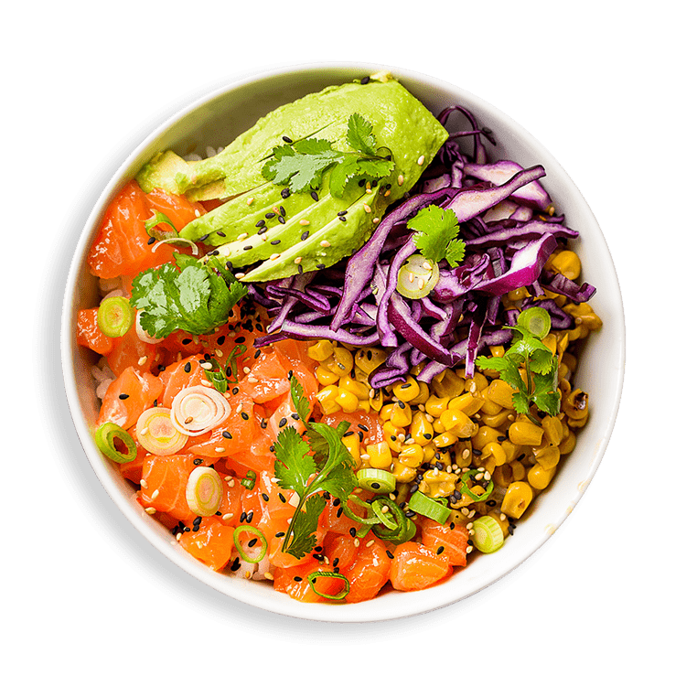

Katsudon
Katsudon is a popular Japanese dish consisting of a deep-fried pork cutlet, known as "tonkatsu," served over a bowl of steamed rice and topped with a savory egg sauce. It is a delicious and satisfying meal that combines crispy and tender textures with rich flavors.
Ingredients
- Pork cutlet (tonkatsu)
- Egg
- Onion
- Dashi broth
- Soy sauce
- Mirin
- Sugar
- Steamed rice
Dish preparation
Start by preparing the tonkatsu. Bread and fry the pork cutlet until it turns golden brown and crispy. Set it aside to drain excess oil. In a separate pan, sauté sliced onions until they become translucent and soft. Prepare the egg sauce by whisking together eggs, dashi broth, soy sauce, mirin, and sugar in a bowl. Pour the egg sauce over the sautéed onions in the pan. Allow it to cook until the eggs are partially set. Place the cooked tonkatsu on top of steamed rice in a bowl. Pour the partially set egg sauce and onions over the tonkatsu and rice. Cover the bowl with a lid or foil and let it sit for a few minutes to allow the residual heat to finish cooking the eggs. Serve hot and enjoy your delicious Katsudon!
Ramen

Ramen is a Japanese dish consisting of noodles served in a savory broth, topped with various ingredients such as meat, vegetables, and egg. It is a comforting and delicious dish that has become very popular worldwide.
Ingredients
- Ramen noodles
- Meat (such as pork or chicken)
- Vegetables (such as scallions, mushrooms, and bean sprouts)
- Egg
- Broth (such as soy sauce or miso)
- Seasonings (such as ginger, garlic, and sesame oil)
Dish Preparation
Start by cooking the ramen noodles according to the package instructions. In a separate pot, prepare the broth by simmering the meat, vegetables, and seasonings in water for a flavorful base. Once the broth is ready, strain it and discard the solids. Cook the meat separately and slice it into thin strips. Soft-boil the egg and set it aside. To assemble the ramen, place the cooked noodles in a bowl, add the sliced meat, and pour the hot broth over them. Top with the soft-boiled egg and garnish with scallions and other desired toppings. Serve hot and enjoy your delicious ramen!
Onigiri

Onigiri is a Japanese rice ball made with seasoned rice and often filled with various ingredients. It is a popular snack or light meal that is portable and easy to make. Onigiri is commonly enjoyed in Japan and has different flavors and shapes.
Ingredients
- Cooked Japanese rice
- Fillings (such as grilled salmon, pickled plum, or seasoned vegetables)
- Nori seaweed
- Salt
Preparation
To make onigiri, start by seasoning the cooked rice with a bit of salt. Wet your hands with water to prevent sticking, then take a handful of rice and shape it into a triangle, ball, or any desired shape. Make a small indentation in the center and add your chosen filling. Cover the filling with more rice and shape it into a compact ball or triangle. Wrap the onigiri with a strip of nori seaweed, if desired. Repeat the process for the remaining rice and fillings. Onigiri can be enjoyed immediately or packed for later. It's a convenient and tasty snack!
Poke Salad
Poke Bowl is a Hawaiian dish that features marinated raw fish, usually tuna or salmon, served over a bed of rice and topped with a variety of fresh vegetables and sauces. It is a healthy and vibrant dish that is customizable to suit individual tastes.
Ingredients
- Raw fish (such as tuna or salmon)
- Cooked rice
- Assorted vegetables (such as cucumber, avocado, carrot, and edamame)
- Soy sauce
- Sesame oil
- Rice vinegar
- Sesame seeds
- Green onions
Preparation
Start by marinating the raw fish in a mixture of soy sauce, sesame oil, and rice vinegar. Let it sit for a few minutes to absorb the flavors. Meanwhile, prepare the rice and chop the assorted vegetables into bite-sized pieces. To assemble the poke bowl, place a bed of rice in a bowl, then arrange the marinated fish and vegetables on top. Drizzle additional soy sauce, sesame oil, or other desired sauces over the bowl. Garnish with sesame seeds and green onions. Mix everything together before eating and enjoy your fresh and delicious poke bowl!
Baos

Baos, also known as bao buns, are a type of steamed bun originating from China. They are soft and fluffy with a filling of meat, vegetables, or other ingredients. Baos are a popular street food and can be found in various cuisines around the world.
Ingredients
- Bao buns (can be store-bought or homemade)
- Meat or vegetable filling (such as pork belly, braised beef, or tofu)
- Assorted toppings (such as pickled vegetables, fresh herbs, and sauces)
Preparation
If using store-bought bao buns, follow the package instructions to steam or heat them. If making homemade buns, prepare the dough and steam them until they are fluffy and cooked through. For the filling, cook the meat or vegetables with desired seasonings until they are tender and flavorful. Once the buns and filling are ready, assemble the baos by placing a spoonful of filling inside each bun. Add any desired toppings, such as pickled vegetables and fresh herbs. Serve the baos warm and enjoy!